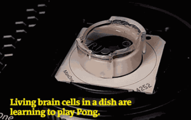
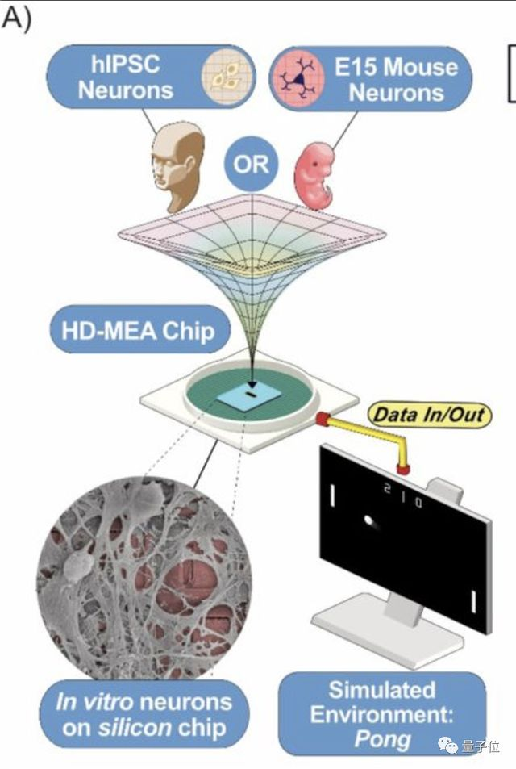
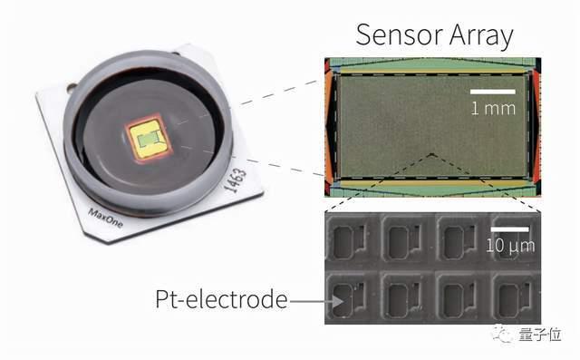
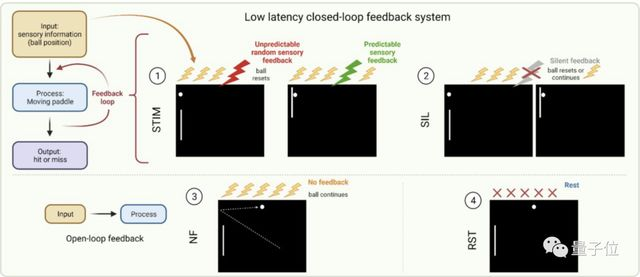

人脑细胞在培养皿中学会打游戏
作者：梦晨 - 凹非寺
大约100万个活体脑细胞在培养皿中生长出来。外界看来它们被放在物理世界的一个容器里。但它们会认为自己“生活”在一个截然不同的世界。这个世界里只有复古的乒乓球电子游戏Pong，他们整天都在打这个游戏。

科学家对外把它们叫做盘中大脑 (DishBrain)。在正式论文里则描述为体外神经网络 (In vitro neural networks)
这项研究来自澳大利亚初创公司Cortical Labs。他们的目标是把活体生物神经元与传统硅集成电路结合在一起，创造出芯片新物种。研究团队的领导者是Cortical Labs首席科学家Brett Kagan。
他透露公司内部经常用《黑客帝国》中的矩阵来称呼这些脑细胞生活的世界。
在游戏中，它们相信自己就是那个球拍。
全世界已经有不少团队在尝试培养这种类脑器官，但Kagan认为他们首次发现了这些“迷你大脑”能够完成目标导向的任务。
论文的结论部分这样写道：
利用DishBrain系统，我们证明了单层的体外皮质神经元在虚拟游戏世界中可以自我组织并表现出智能和有感知能力的行为。
脑细胞是谁的？
脑细胞如何获取，这项研究是否符合伦理规范，可能是很多人首先关心的问题。
可以放心，并不需要从人脑中提取神经元细胞，而是有两种不同来源：
直接使用小鼠神经元细胞，或者用人类干细胞诱导分化成神经元细胞进行培养繁殖。

整个实验也经过了澳大利亚当地的伦理委员会审查。
两种细胞来源的对比实验中，人类神经元的游戏水平总是高于小鼠神经元。
这也给此前科学上一个假设提供了初步证据：
所有关键特征(细胞数量、感觉输入、运动输出等)保持不变，人类神经元的信息处理能力优于啮齿动物神经元。
研究团队猜测这可能是因为人类神经元树突长度更长，密度更高。

现在知道了细胞从何而来，下一个问题就是这些盘中大脑如何学会打游戏的？
5分钟学会打游戏，AI需要90分钟
培养好的脑细胞被放在高密度微电极阵列（HD-MEA）上，由瑞士公司Maxwell Biosystems提供。

通过低延迟的软件，研究人员可以用电信号刺激电极阵列上的神经元细胞并测量记录他们的活动情况。
在8mm*8mm的面积上排列着共用26400个铂金电极，也就是说最高分辨率可达220*120。
电信号发送到阵列的不同区域代表“乒乓球”的位置，而脑细胞可以自己产生电信号来移动“球拍”。

通过一套信号循环反馈系统，盘中大脑用5分钟就能学会玩乒乓球游戏。
掌握同样的游戏，人工智能需要花90分钟。
虽然盘中大脑学会打游戏的速度更快，但是最后游戏水平还是不如高级的人工智能，比如DeepMind开发的那个。
2013年DeepMind的惊艳亮相，就是演示了AI在乒乓球、打砖块、越野耐力赛三款经典雅达利游戏上可以超过人类高手水平。
这次演示也是促成谷歌收购DeepMind的原因之一。
现在是只有部分人类脑细胞组成的盘中大脑上场，游戏打不赢AI倒也正常。
关于Cortical Labs
Cortical Labs成立于2019年，目标是利用合成生物技术开发具有流动智力的新型人工智能。
他们认为生物神经元能够通过自组织解决陌生问题、比数字电路有更强的适应性和可扩展性、同时更省电。
比如人类的大脑有超过10亿个神经元，能够产生通用智能却只消耗20瓦特的能量。
创始人兼首席执行官Hon Weng Chong是医学与计算机交叉背景，博士毕业于约翰霍普金斯大学。
联合创始人Andy Kitchen是软件工程师出身，毕业于澳大利亚皇家墨尔本理工大学。
首席科学家Brett Kagan研究神经科学，博士毕业于墨尔本大学。
Laura Summers是设计师，Andrew Doherty是硬件工程师。
Cortical Labs已经将本次研究的相关数据和代码开源。